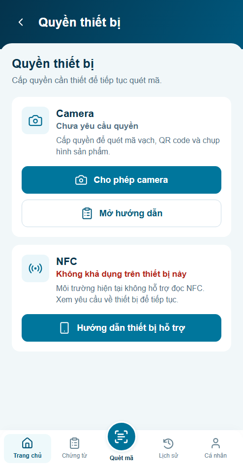

4panel ×3mode đã kiểm. Thông báo140ms; OS reduced80ms; off tĩnh. Hết phiên chặn ngay, không đợi animation. Visual chờ review; backend/thiết bị thật chưa nghiệm thu.
Báo cáo · 12ảnh so đúng caller/fixture · Preview tương tác



Ảnh tĩnh chỉ đối chiếu hình thức. Trace thật và samples ghi các hiệu ứng; không phải chứng nhận60fps.